AI 绘画神器 Stable Diffusion 基础教程¶
一、AI 绘画工具的选择与运用¶
1. 工作场景下 AI 绘画工具的选择
目前文生图的主流 AI 绘画平台主要有三种：Midjourney、Stable Diffusion、DALL·E。如果要在实际工作场景中应用，我更推荐 Stable Diffusion。
另一个热门平台的基础教程：
通过对比，Stable Diffusion 在数据安全性（可本地部署）、可扩展性（成熟插件多）、风格丰富度（众多模型可供下载，也可以训练自有风格模型）、费用版权（开源免费、可商用）等方面更适合我们的工作场景。
那么如何在实际工作中应用 Stable Diffusion 进行 AI 绘画？
要在实际工作中应用 AI 绘画，需要解决两个关键问题，分别是：图像的精准控制和图像的风格控制。
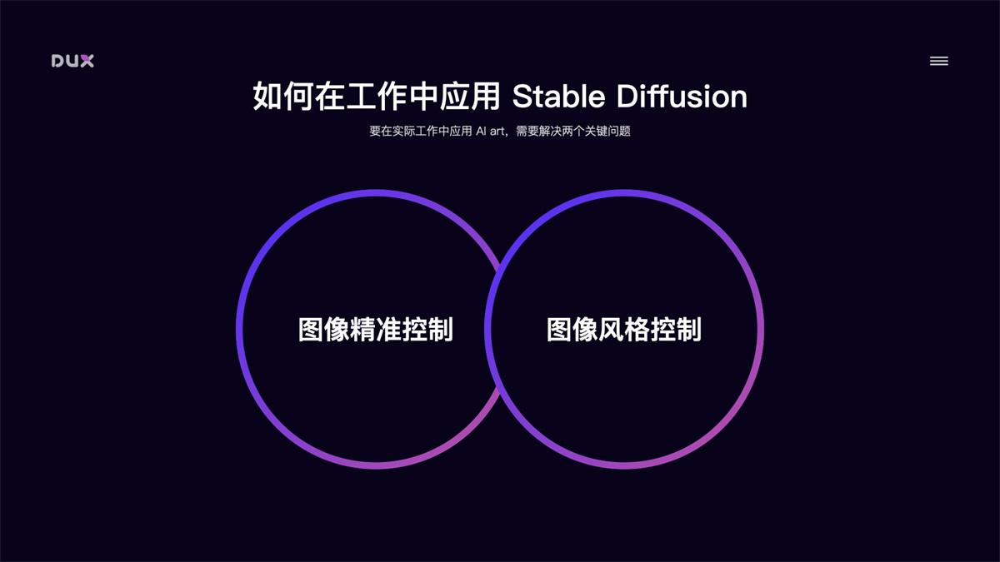
2. 图像精准控制
图像精准控制推荐使用 Stable Diffusion 的 ControlNet 插件。在 ControlNet 出现之前，AI 绘画更像开盲盒，在图像生成前，你永远都不知道它会是一张怎样的图。ControlNet 的出现，真正意义上让 AI 绘画上升到生产力级别。简单来说 ControlNet 它可以精准控制 AI 图像的生成。
ControlNet 主要有 8 个应用模型：OpenPose、Canny、HED、Scribble、Mlsd、Seg、Normal Map、Depth。以下做简要介绍：
OpenPose 姿势识别
通过姿势识别，达到精准控制人体动作。除了生成单人的姿势，它还可以生成多人的姿势，此外还有手部骨骼模型，解决手部绘图不精准问题。以下图为例：左侧为参考图像，经 OpenPose 精准识别后，得出中间的骨骼姿势，再用文生图功能，描述主体内容、场景细节和画风后，就能得到一张同样姿势，但风格完全不同的图。
Canny 边缘检测
Canny 模型可以根据边缘检测，从原始图片中提取线稿，再根据提示词，来生成同样构图的画面，也可以用来给线稿上色。
HED 边缘检测
跟 Canny 类似，但自由发挥程度更高。HED 边界保留了输入图像中的细节，绘制的人物明暗对比明显，轮廓感更强，适合在保持原来构图的基础上对画面风格进行改变时使用。
Scribble 黑白稿提取
涂鸦成图，比 HED 和 Canny 的自由发挥程度更高，也可以用于对手绘线稿进行着色处理。
Mlsd 直线检测
通过分析图片的线条结构和几何形状来构建出建筑外框，适合建筑设计的使用。
Seg 区块标注
通过对原图内容进行语义分割，可以区分画面色块，适用于大场景的画风更改。
Normal Map 法线贴图
适用于三维立体图，通过提取用户输入图片中的 3D 物体的法线向量，以法线为参考绘制出一副新图，此图与原图的光影效果完全相同。
Depth 深度检测
通过提取原始图片中的深度信息，可以生成具有同样深度结构的图。还可以通过 3D 建模软件直接搭建出一个简单的场景，再用 Depth 模型渲染出图。
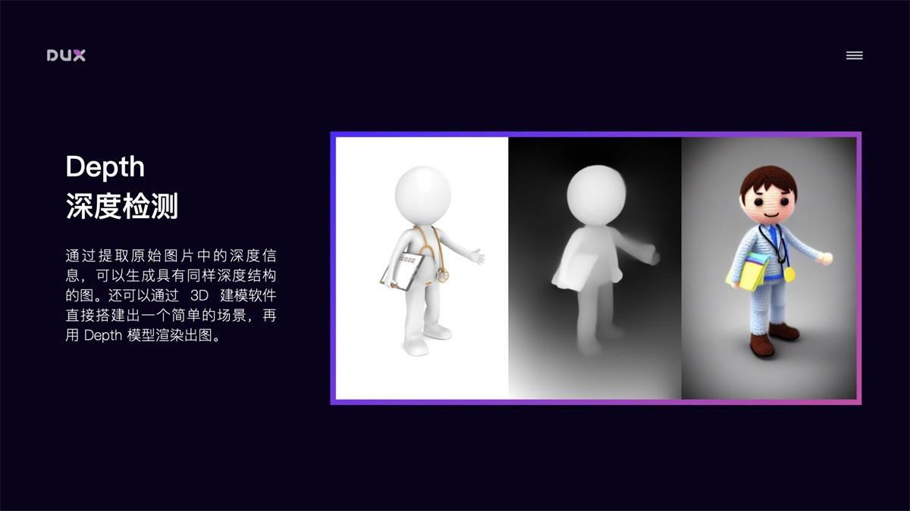
ControlNet 还有项关键技术是可以开启多个 ControlNet 的组合使用，对图像进行多条件控制。例如：你想对一张图像的背景和人物姿态分别进行控制，那我们可以配置 2 个 ControlNet，第 1 个 ControlNet 使用 Depth 模型对背景进行结构提取并重新风格化，第 2 个 ControlNet 使用 OpenPose 模型对人物进行姿态控制。此外在保持 Seed 种子数相同的情况下，固定出画面结构和风格，然后定义人物不同姿态，渲染后进行多帧图像拼接，就能生成一段动画。
以上通过 ControlNet 的 8 个主要模型，我们解决了图像结构的控制问题。接下来就是对图像风格进行控制。
3. 图像风格控制
Stable Diffusion 实现图像风格化的途径主要有以下几种：Artist 艺术家风格、Checkpoint 预训练大模型、LoRA 微调模型、Textual Inversion 文本反转模型。
Artist 艺术家风格
主要通过画作种类 Tag（如：oil painting、ink painting、comic、illustration），画家/画风 Tag（如：Hayao Miyazaki、Cyberpunk）等控制图像风格。网上也有比较多的这类风格介绍，如：
但需要注意的是，使用艺术家未经允许的风格进行商用，会存在侵权问题。
Checkpoint 预训练大模型
Checkpoint 是根据特定风格训练的大模型，模型风格强大，但体积也较大，一般 5-7GB。模型训练难度大，需要极高的显卡算力。目前网上已经有非常多的不同风格的成熟大模型可供下载使用。如：huggingface text-to-image
LoRA 微调模型
LoRA 模型是通过截取大模型的某一特定部分生成的小模型，虽然不如大模型的能力完整，但短小精悍。因为训练方向明确，所以在生成特定内容的情况下，效果会更好。LoRA 模型也常用于训练自有风格模型，具有训练速度快，模型大小适中，配置要求低（8G 显存）的特点，能用少量图片训练出风格效果。常用 LoRA 模型下载地址：
- StableTes - A catalogue of useful tools and extensions for Stable Diffusion
- Civitai - Browse, share, and review custom AI art models（友情提醒：不要在办公场所打开，不然会很尴尬）
Textual Inversion 文本反转模型
Textual Inversion 文本反转模型也是微调模型的一种，它是针对一个风格或一个主题训练的风格模型，一般用于提高人物还原度或优化画风，用这种方式生成的模型非常小，一般几十 KB，在生成画作时使用对应 Tag 在 prompt 中进行调用。
自有风格模型训练
Stable Diffusion 的强大之处还在于能够自定义训练风格模型，如果现有风格无法满足要求，我们还可以自己训练特定风格模型。Stable Diffusion 支持训练大模型和微调模型。我比较推荐的是用 LoRA 模型训练方法，该方法训练速度快，模型大小适中（100MB 左右），配置要求低（8G 显存），能用极少量图片训练出风格效果。例如：下图中我用了 10 张工作中的素材图，大概花了 20 分钟时间训练出该风格的 LoRA 模型，然后使用该模型就可以生成风格类似的图片。如果将训练样本量增大，那么训练出来的风格样式会更加精确。
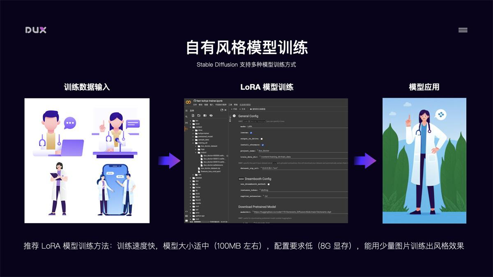
了解了 Stable Diffusion 能干什么后，再来介绍下如何部署安装使用它。
二、AI 绘画工具的部署安装¶
以下主要介绍三种部署安装方式：云端部署、本地部署、本机安装，各有优缺点。当本机硬件条件支持的情况下，推荐本地部署，其它情况推荐云端方式。
1. 云端部署 Stable Diffusion
通过 Google Colab 进行云端部署，推荐将成熟的 Stable Diffusion Colab 项目复制到自己的 Google 云端硬盘运行，省去配置环境麻烦。这种部署方式的优点是：不吃本机硬件，在有限时间段内，可以免费使用 Google Colab 强大的硬件资源，通常能给到 15G 的 GPU 算力，出图速度非常快。缺点是：免费 GPU 使用时长不固定，通常情况下一天有几个小时的使用时长，如果需要更长时间使用，可以订阅 Colab 服务。
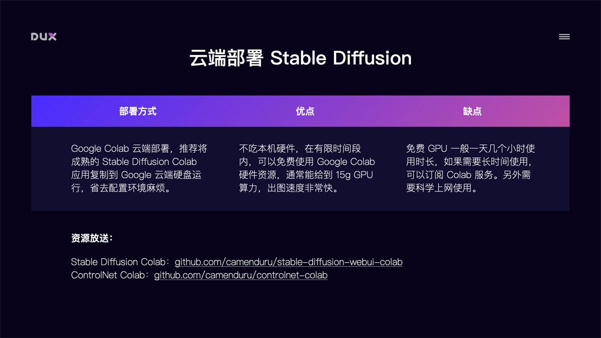
推荐两个目前比较好用的 Stable Diffusion Colab，选择相应模型版本运行即可：
- Stable Diffusion Colab （不带 ControlNet）
- ControlNet Colab（带 ControlNet）
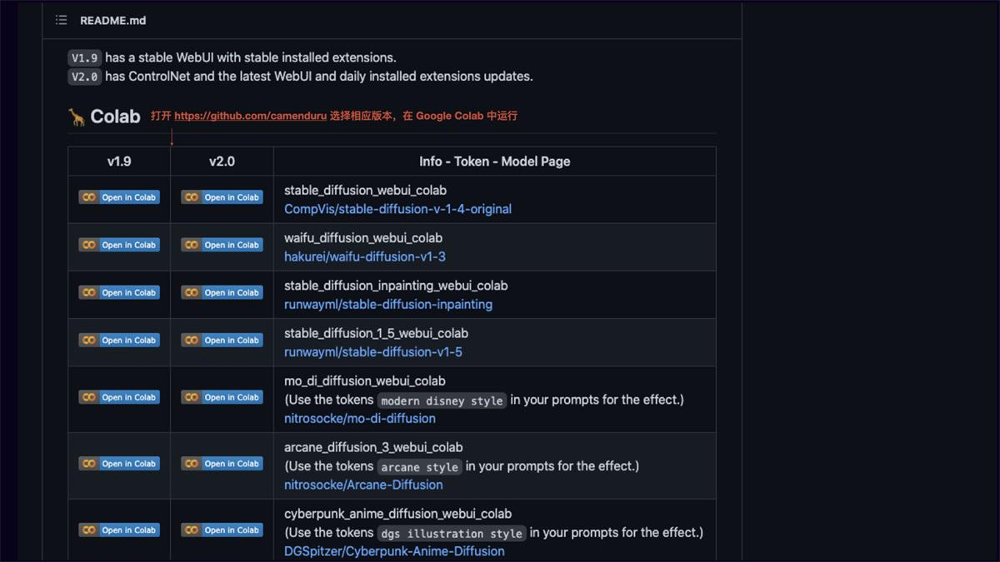
Colab 运行界面如下，点击连接虚拟机，连接成功后点击左侧运行代码，等待环境自动配置完成后，点击 WebUI URL 即可运行 Stable Diffusion。
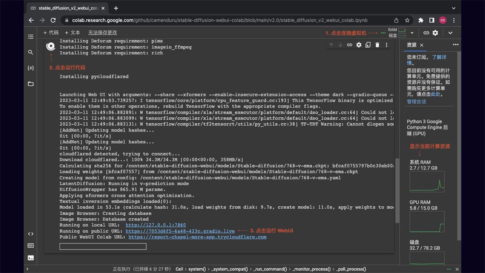
Stable Diffusion WebUI 运行界面如下，在后面的操作方法里我会介绍下 Stable Diffusion 的基础操作。
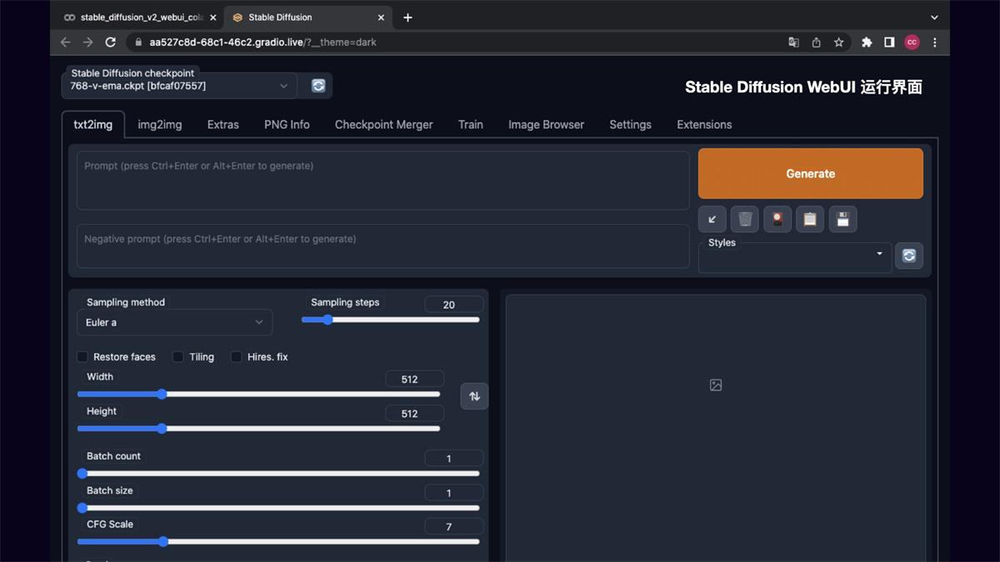
2. 本地部署 Stable Diffusion
相较于 Google Colab 云端部署，本地部署 Stable Diffusion 的可扩展性更强，可自定义安装需要的模型和插件，隐私性和安全性更高，自由度也更高，而且完全免费。当然缺点是对本机硬件要求高，Windows 需要 NVIDIA 显卡，8G 以上显存，16G 以上内存。Mac 需要 M1/M2 芯片才可运行。
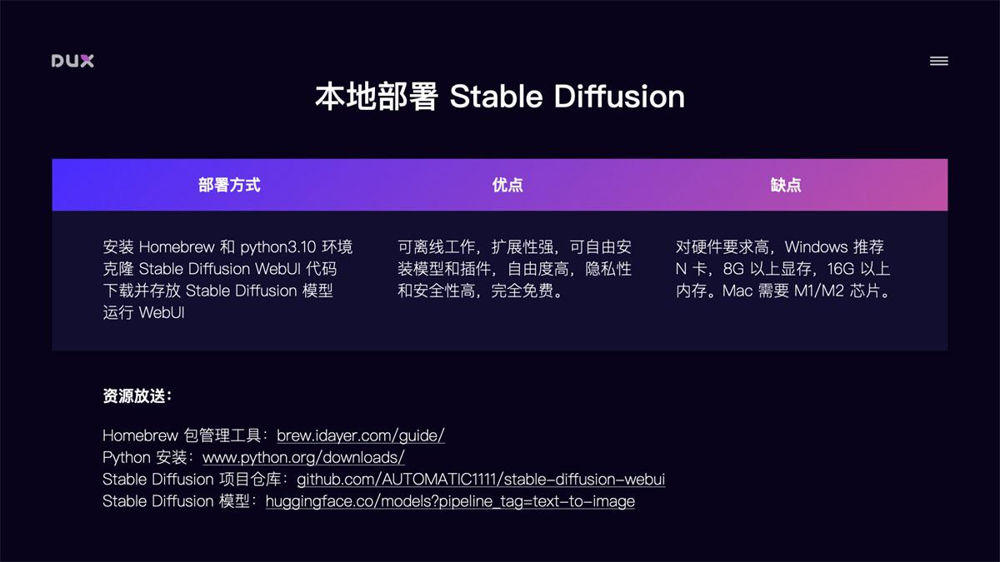
本地部署方式主要分四步，以 Mac M1 为例：
第 1 步：安装 Homebrew 和 Python3.10 环境
Homebrew 是一个包管理工具，具体安装方法可参考
Python3.10 安装：brew install cmake protobuf rust python@3.10 git wget
第 2 步：克隆 Stable Diffusion WebUI 项目仓库
推荐下载 AUTOMATIC1111 的 Stable Diffusion WebUI，能很好的支持 ControlNet 扩展。
克隆项目仓库：git clone https://github.com/AUTOMATIC1111/stable-diffusion-webui
第 3 步：下载并存放 Stable Diffusion 模型
Stable Diffusion 模型可以下载官方提供的 1.5 或 2.0 版本的 ckpt 文件，其它风格模型则根据自己需要下载。下载地址：Stable Diffusion 模型
下载完后找到 stable-diffusion-webui 文件夹，把下载的 ckpt 大模型文件存放到 stable-diffusion-webui/models/Stable-diffusion 目录下。
如果下载了 LoRA 模型的 safetensors 文件，则存放到 stable-diffusion-webui/models/Lora 目录中。
Textual Inversion 文本反转模型的 pt 文件，存放到 stable-diffusion-webui/embeddings 目录中。
第 4 步：运行 Stable Diffusion WebUI
模型文件存放完成后，运行 Stable Diffusion WebUI：
先输入 cd stable-diffusion-webui 再输入 ./webui.sh，程序会自动完成下载安装。
运行完毕后显示：Running on local URL: http://127.0.0.1:7860 To create a public link, set share=True in launch()
在浏览器中打开 http://127.0.0.1:7860 ，即可运行 Stable Diffusion WebUI
需要用到的资源：
ControlNet 的安装
安装完 Stable Diffusion WebUI 后，我们再安装 ControlNet 扩展，以便进行图像的精准控制。
安装方法：
第 1 步：安装 ControlNet 插件
点击扩展，选择从 URL 安装，输入插件地址 ，点击 Install 后重启 WebUI。
第 2 步：安装 ControlNet 模型
打开模型下载页面 huggingface模型下载
- 将 annotator 目录中的人体检测预处理模型 body_pose_model.pth 和 hand_pose_model.pth 下载至本地 stable-diffusion-webui/extensions/sd-webui-controlnet/annotator/openpose 目录。
- 将深度图模型 dpt_hybrid-midas-501f0c75.pt 下载至本地 stable-diffusion-webui/extensions/sd-webui-controlnet/annotator/midas 目录 将 models 目录中的文件下载至本地 stable-diffusion-webui/extensions/sd-webui-controlnet/models 目录
- 重启 WebUI 即可使用 ControlNet
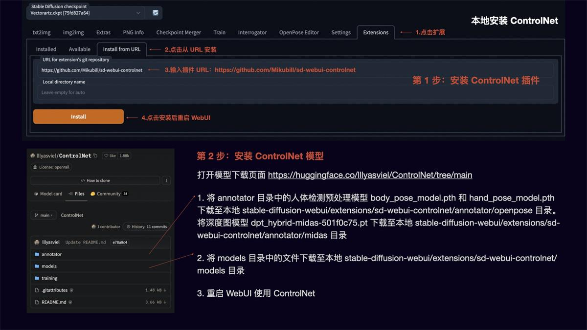
解决 ControlNet 在 Mac M1 上无法运行问题
对于 Mac M1 芯片的电脑来说，直接运行 ControlNet 会报错，导致无法使用 ControlNet。原因是 CUDA 是适用于 NVIDIA GPU 的计算框架，当前 Mac OS 无法使用此框架，因此脚本会尝试使用 CPU，但 M1 不支持半精度数字。因此我们需要跳过 CUDA 并使用 no-half。
解决方法：
- 找到 webui-macos-env.sh 文件
- 添加
export COMMANDLINE_ARGS="--precision full --no-half --skip-torch-cuda-test"
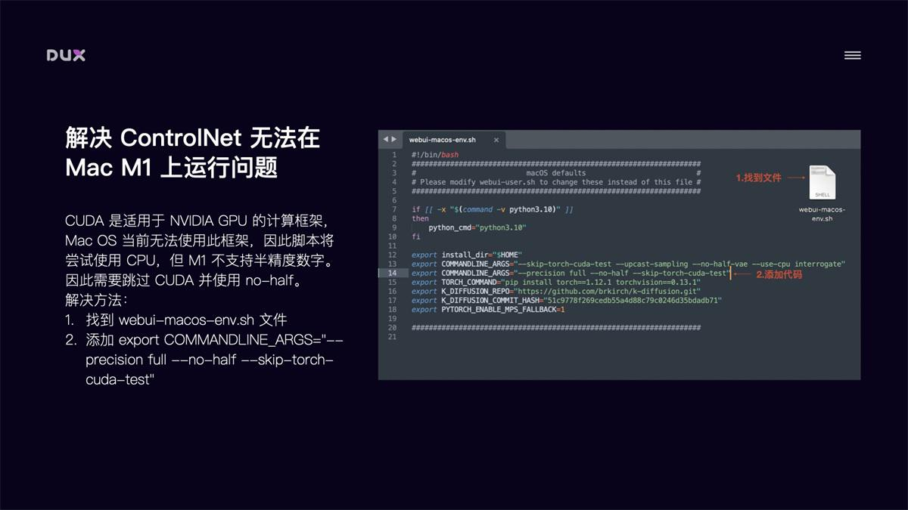
3. 本机安装 DiffusionBee
如果觉得云端部署和本地部署比较繁琐，或对使用要求没有那么高，那就试下最简单的一键安装方式。下载Diffusionbee 应用。优点是方便快捷，缺点是扩展能力差（可以安装大模型，无法进行插件扩展，如 ControlNet）。
三、AI 绘画工具的操作技巧¶
1. Stable Diffusion 基础操作
文生图
如图所示 Stable Diffusion WebUI 的操作界面主要分为：模型区域、功能区域、参数区域、出图区域。
- txt2img 为文生图功能，重点参数介绍：
- 正向提示词：描述图片中希望出现的内容
- 反向提示词：描述图片中不希望出现的内容
- Sampling method：采样方法，推荐选择 Euler a 或 DPM++ 系列，采样速度快
- Sampling steps：迭代步数，数值越大图像质量越好，生成时间也越长，一般控制在 30-50 就能出效果
- Restore faces：可以优化脸部生成
- Width/Height：生成图片的宽高，越大越消耗显存，生成时间也越长，一般方图 512x512，竖图 512x768，需要更大尺寸，可以到 Extras 功能里进行等比高清放大
- CFG：提示词相关性，数值越大越相关，数值越小越不相关，一般建议 7-12 区间
- Batch count/Batch size：生成批次和每批数量，如果需要多图，可以调整下每批数量
- Seed：种子数，-1 表示随机，相同的种子数可以保持图像的一致性，如果觉得一张图的结构不错，但对风格不满意，可以将种子数固定，再调整 prompt 生成
图生图
img2img 功能可以生成与原图相似构图色彩的画像，或者指定一部分内容进行变换。可以重点使用 Inpaint 图像修补这个功能：
- Resize mode：缩放模式，Just resize 只调整图片大小，如果输入与输出长宽比例不同，图片会被拉伸。Crop and resize 裁剪与调整大小，如果输入与输出长宽比例不同，会以图片中心向四周，将比例外的部分进行裁剪。Resize and fill 调整大小与填充，如果输入与输出分辨率不同，会以图片中心向四周，将比例内多余的部分进行填充
- Mask blur：蒙版模糊度，值越大与原图边缘的过度越平滑，越小则边缘越锐利
- Mask mode：蒙版模式，Inpaint masked 只重绘涂色部分，Inpaint not masked 重绘除了涂色的部分
- Masked Content：蒙版内容，fill 用其他内容填充，original 在原来的基础上重绘
- Inpaint area：重绘区域，Whole picture 整个图像区域，Only masked 只在蒙版区域
- Denoising strength：重绘幅度，值越大越自由发挥，越小越和原图接近
ControlNet
安装完 ControlNet 后，在 txt2img 和 img2img 参数面板中均可以调用 ControlNet。操作说明：
- Enable：启用 ControlNet
- Low VRAM：低显存模式优化，建议 8G 显存以下开启
- Guess mode：猜测模式，可以不设置提示词，自动生成图片
- Preprocessor：选择预处理器，主要有 OpenPose、Canny、HED、Scribble、Mlsd、Seg、Normal Map、Depth
- Model：ControlNet 模型，模型选择要与预处理器对应
- Weight：权重影响，使用 ControlNet 生成图片的权重占比影响
- Guidance strength(T)：引导强度，值为 1 时，代表每迭代 1 步就会被 ControlNet 引导 1 次
- Annotator resolution：数值越高，预处理图像越精细
- Canny low/high threshold：控制最低和最高采样深度
- Resize mode：图像大小模式，默认选择缩放至合适
- Canvas width/height：画布宽高
- Create blank canvas：创建空白画布
- Preview annotator result：预览注释器结果，得到一张 ControlNet 模型提取的特征图片
- Hide annotator result：隐藏预览图像窗口
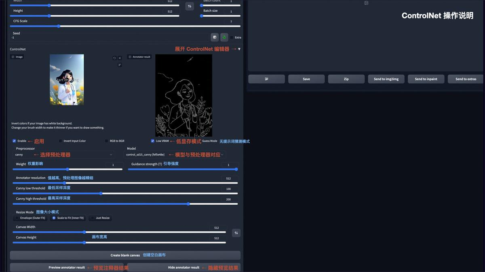
LoRA 模型训练说明
前面提到 LoRA 模型具有训练速度快，模型大小适中（100MB 左右），配置要求低（8G 显存），能用少量图片训练出风格效果的优势。
以下简要介绍该模型的训练方法：
第 1 步：数据预处理
在 Stable Diffusion WebUI 功能面板中，选择 Train 训练功能，点选 Preprocess images 预处理图像功能。在 Source directory 栏填入你要训练的图片存放目录，在 Destination directory 栏填入预处理文件输出目录。width 和 height 为预处理图片的宽高，默认为 512x512，建议把要训练的图片大小统一改成这个尺寸，提升处理速度。勾选 Auto focal point crop 自动焦点裁剪，勾选 Use deepbooru for caption 自动识别图中的元素并打上标签。点击 Preprocess 进行图片预处理。
第 2 步：配置模型训练参数
在这里可以将模型训练放到 Google Colab 上进行，调用 Colab 的免费 15G GPU 将大大提升模型训练速度。LoRA 微调模型训练工具我推荐使用 Kohya，运行Kohya Colab
配置训练参数：
先在 content 目录建立 training_dir/training_data 目录，将步骤 1 中的预处理文件上传至该数据训练目录。然后配置微调模型命名和数据训练目录，在 Download Pretrained Model 栏配置需要参考的预训练模型文件。其余的参数可以根据需要调整设置。
第 3 步：训练模型
参数配置完成后，运行程序即可进行模型训练。训练完的模型将被放到 training_dir/output 目录，我们下载 safetensors 文件格式的模型，存放到 stable-diffusion-webui/models/Lora 目录中即可调用该模型。由于直接从 Colab 下载速度较慢，另外断开 Colab 连接后也将清空模型文件，这里建议在 Extras 中配置 huggingface 的 Write Token，将模型文件上传到 huggingface 中，再从 huggingface File 中下载，下载速度大大提升，文件也可进行备份。
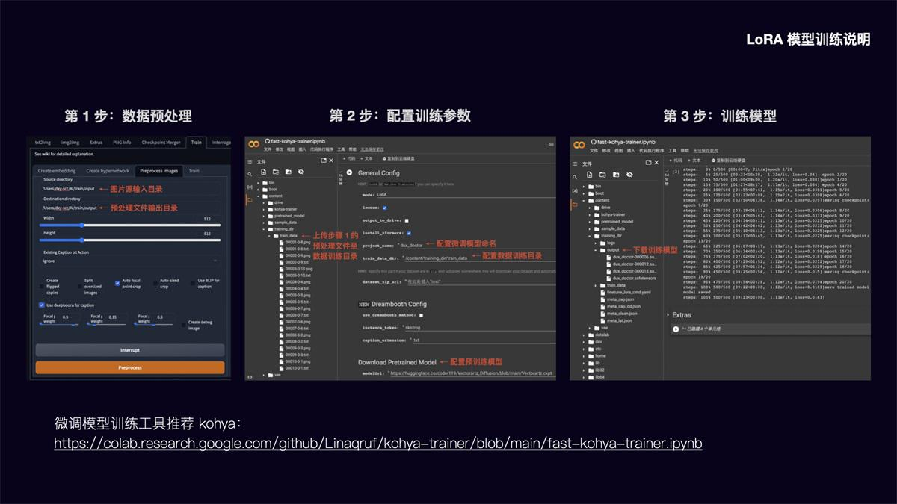
2. Prompt 语法技巧
文生图模型的精髓在于 Prompt 提示词，如何写好 Prompt 将直接影响图像的生成质量。
提示词结构化
Prompt 提示词可以分为 4 段式结构：画质画风 + 画面主体 + 画面细节 + 风格参考
- 画面画风：主要是大模型或 LoRA 模型的 Tag、正向画质词、画作类型等
- 画面主体：画面核心内容、主体人/事/物/景、主体特征/动作等
- 画面细节：场景细节、人物细节、环境灯光、画面构图等
- 风格参考：艺术风格、渲染器、Embedding Tag 等
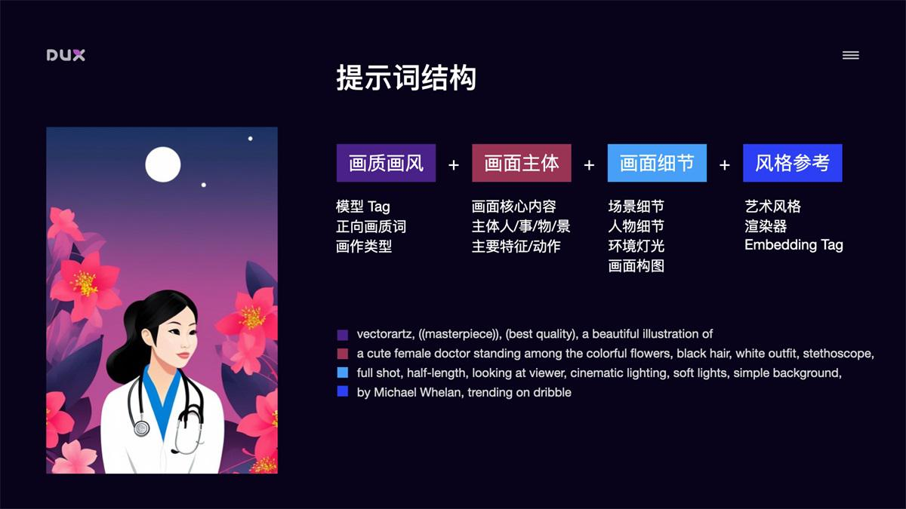
提示词语法
- 提示词排序：越前面的词汇越受 AI 重视，重要事物的提示词放前面
- 增强/减弱：(提示词:权重数值)，默认 1，大于 1 加强，低于 1 减弱。如 (doctor:1.3)
- 混合：提示词 | 提示词，实现多个要素混合，如 [red|blue] hair 红蓝色头发混合
- + 和 AND：用于连接短提示词，AND 两端要加空格
- 分步渲染：[提示词 A:提示词 B:数值]，先按提示词 A 生成，在设定的数值后朝提示词 B 变化。如[dog
 30] 前 30 步画狗后面的画猫，[dog0.9] 前面 90%画狗后面 10%画猫
30] 前 30 步画狗后面的画猫，[dog0.9] 前面 90%画狗后面 10%画猫 - 正向提示词：masterpiece, best quality 等画质词，用于提升画面质量
- 反向提示词：nsfw, bad hands, missing fingers……, 用于不想在画面中出现的内容
- Emoji：支持 emoji，如 😍 形容表情，🖐 修饰手
常用提示词举例：
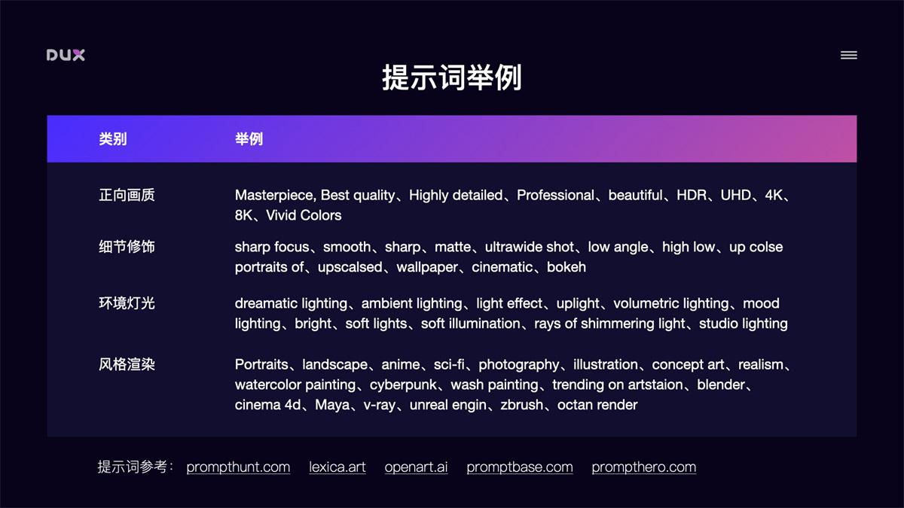
3. ChatGPT 辅助生成提示词
我们也可以借助 ChatGPT 帮我们生成提示词参考。
- 给 ChatGPT 一段示例参考
- 根据参考生成 Prompts，再添加细节润色
4. Stable Diffusion 全中文环境配置
在实际使用中，我们还可以把 Stable Diffusion 配置成全中文环境，这将大大增加操作友好度。全中文环境包括了 Stable Diffusion WebUI 的汉化和 Prompt 支持中文输入。
Stable Diffusion WebUI 汉化
- 安装中文扩展插件：点击 Extensions 选择 Install from URL，输入 ，点击 Install，并重启 WebUI
- 切换到中文模式：在 Settings 面板中，将 User interface 中的 Localization 设置成 Chinese 中文模式，重启 WebUI 即可切换到中文界面
Prompt 中文输入
- 下载提示词中文扩展插件 ，将项目作为 zip 文件下载，解压后放到 stable-diffusion-webui/extensions 目录中，重启 WebUI
- 调用百度翻译 API：去 api.fanyi.baidu.com 申请一个免费 API Key，并将翻译服务开通。在管理控制台的开发者信息页中确认 APP ID 和 密钥
- 在 Stable Diffusion WebUI 的 Prompt Translator 面板中，选择百度翻译引擎，并将申请的 APP ID 和 密钥填写进去，点击保存
- 使用：在 Stable Diffusion WebUI 页面顶部会出现一个翻译工具栏，我们在提示词输入框中输入中文，点击工具栏中的翻译就能自动把提示词替换成英文
结语¶
本文简要介绍了 AI 绘画工具 Stable Diffusion 的安装使用，以及如何通过 ControlNet 实现图像的精准控制，如何通过模型加载和自有风格模型训练来控制图像画风。可以说这些技术的出现使得 AI 绘画具备了实际的生产能力，设计师们可以充分利用好这些强大的生产工具来提升设计效率。
参考:
凡本网注明"来源：XXX "的文/图/视频等稿件，本网转载出于传递更多信息之目的，并不意味着赞同其观点或证实其内容的真实性。如涉及作品内容、版权和其它问题，请与本网联系，我们将在第一时间删除内容！
作者:
来源： https://www.uisdc.com/stable-diffusion-2